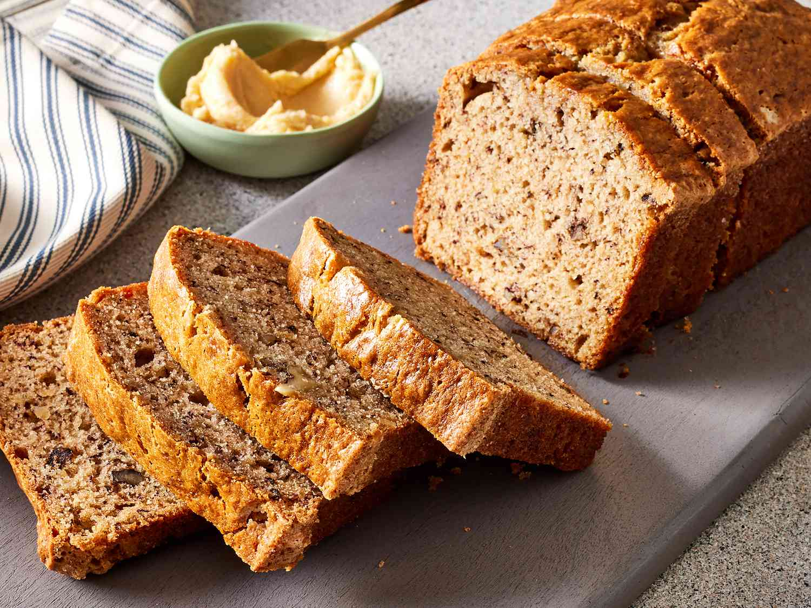

Home
Banana bread

Description
This banana cake is one of the easiest cakes we've ever made. Ever. You can make this banana cake plain, or use it as a starting point. Add nuts, dried fruit, chocolate chunks, spices too.
Ingredients
- 3 very ripe medium bananas
- 3 large free-range eggs
- 100g soft light brown sugar
- 150ml sunflower or vegetable oil
- 275g white self-raising flour
- 1 tsp ground mixed spice
- 1 tsp baking powder
Steps
- Preheat the oven to 180C/160C Fan/Gas 4 and grease and line a 900g/2lb loaf tin with baking parchment or use a loaf tin liner.
- Peel the bananas and mash with a fork. Tip into a large mixing bowl and add the eggs, sugar and oil. Use a fork or whisk to combine.
- Add the flour, spice and baking powder and whisk together until thoroughly combined. Pour into the prepared tin. Bake for 40 minutes, or until the cake is well risen and a skewer inserted into the centre comes out clean.
- Cool in the tin for 10 minutes, then turn out onto a wire rack. Serve warm or cold in slices. Spread with butter if you like.